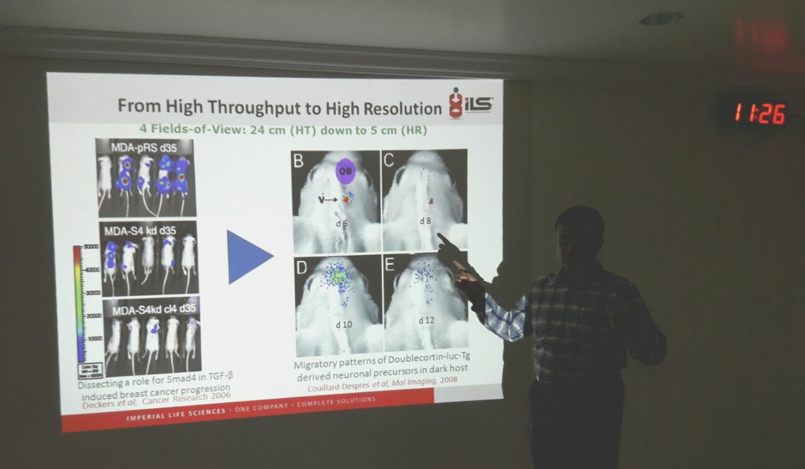
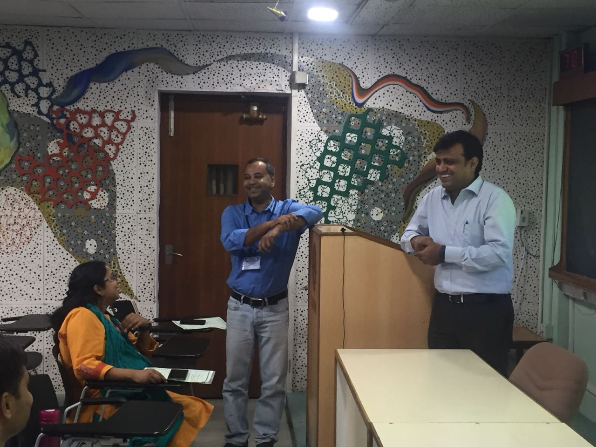

Media Coverage

News coverage highlighting research on glioblastoma and identification of prognostic hub genes through integrated bioinformatics analysis.
Computational Oncology • Cytogenetics • Cancer Genomics • AI Biology
Principal Investigator: Dr. Harshit Kumar Soni
Head of Department
Department of Biotechnology
Government PG College Satna, India
Assistant Professor
Department of Zoology
Government PG College Satna, India
Coordinator
Incubation Center
Government PG College Satna, India
Research interests include cancer genomics, cytogenetics, computational oncology and AI-driven biomedical research.
Multi-omics integration to identify cancer biomarkers and regulatory gene networks.
Chromosomal instability and environmental mutagenesis in cancer development.
Structure-based drug discovery using docking and molecular dynamics.
Machine learning approaches for disease prediction and biomarker discovery.
News coverage highlighting research on glioblastoma and identification of prognostic hub genes through integrated bioinformatics analysis.

Academic interaction

Scientific event

In Animal Tissue Culture Lab